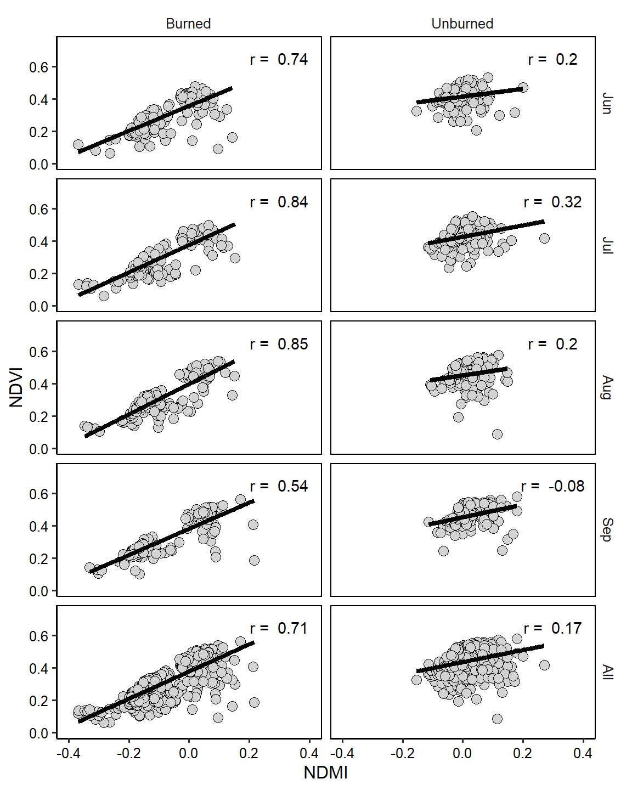
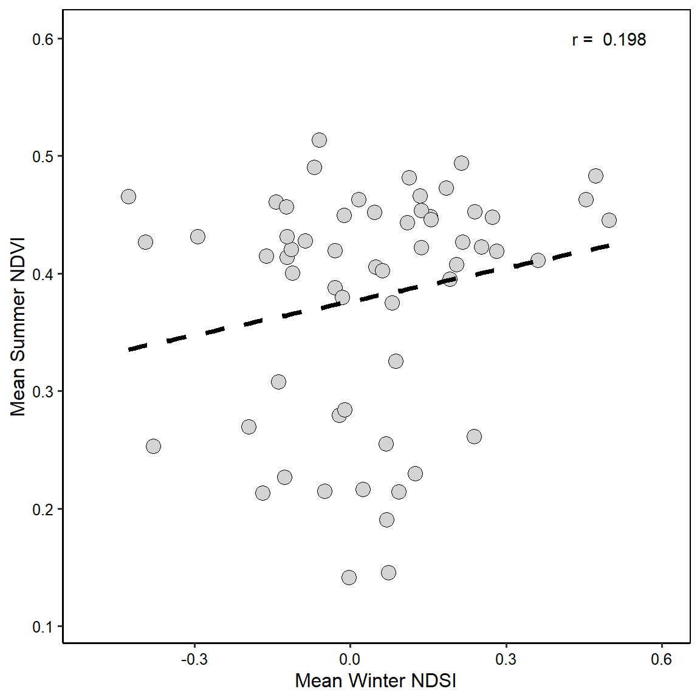
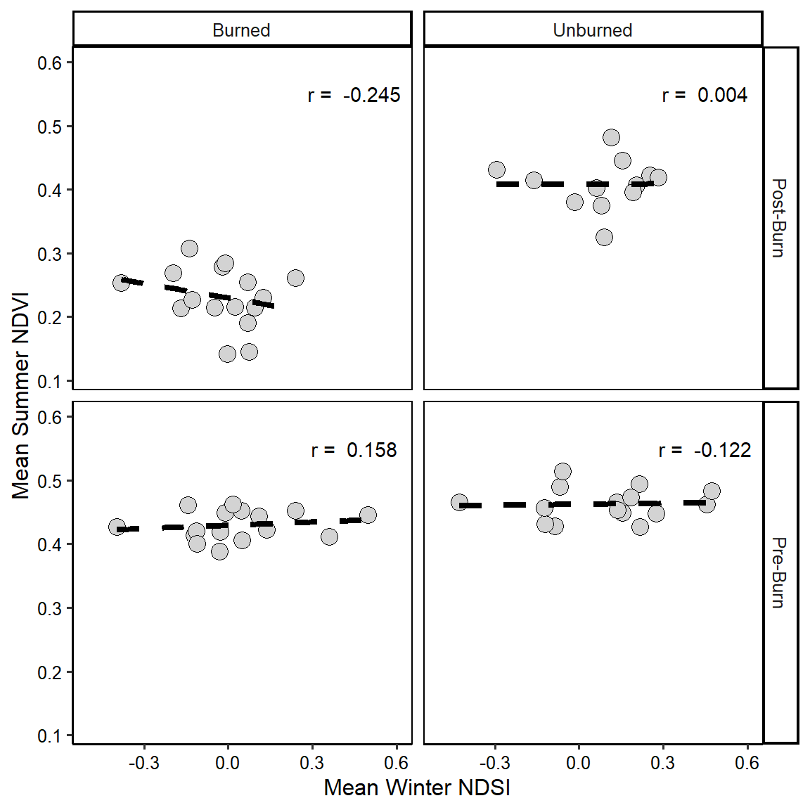
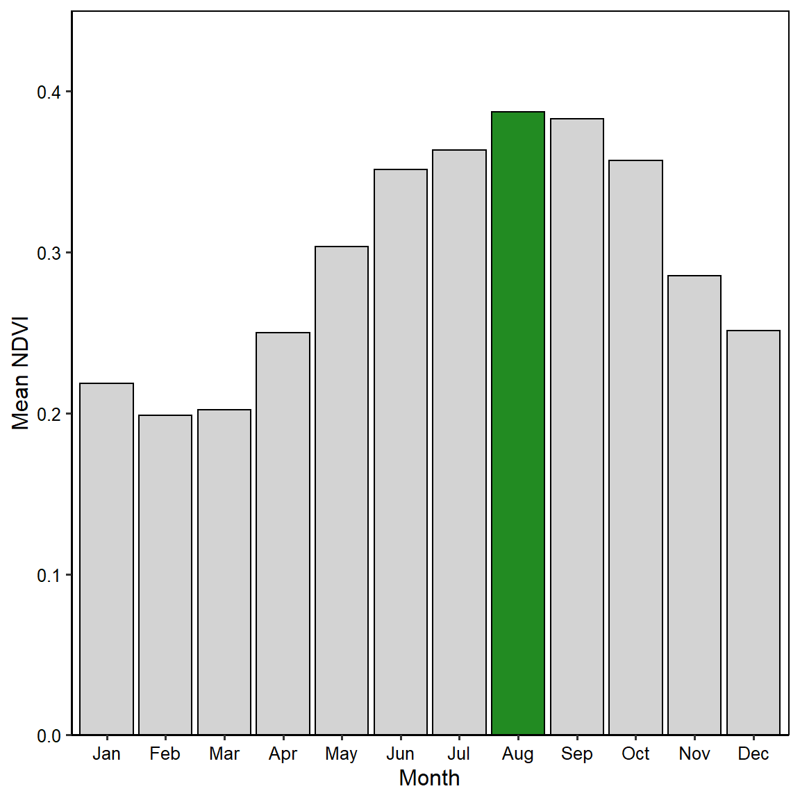
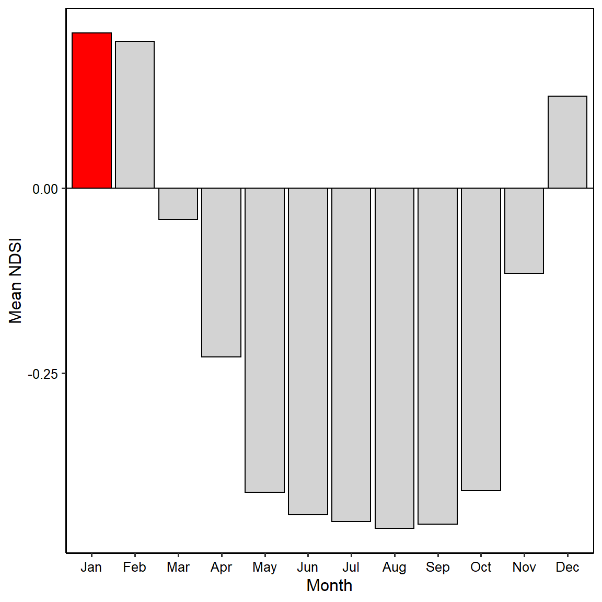

Chapter 2 Chapter 1 - Hayman Fire Recovery
2.1 Importing the data and cleaning it up.
files <- list.files('./Data/Chapter_1/', full.names = T)
ndmi <- read_csv(files[1]) %>%
rename(Burned = 2,Unburned = 3) %>%
mutate(data = "ndmi")
ndsi <- read_csv(files[2]) %>%
rename(Burned = 2, Unburned = 3) %>%
mutate(data = "ndsi")
ndvi <- read_csv(files[3]) %>%
rename(Burned = 2, Unburned = 3) %>%
mutate(data = "ndvi")
## Gather data together into a tidy tibble.
full_long <- rbind(ndvi, ndmi, ndsi) %>%
gather(key = "site",
value = "value",
-DateTime,
-data) %>%
filter(!is.na(value))2.2 Question 1
What is the correlation between NDVI and NDMI?
## Create tibble with individual columns, filter summer months.
Q1.data <- full_long %>%
filter(!is.na(value)) %>%
pivot_wider(names_from = c(data),
values_from = c(value)) %>%
mutate(month = month(DateTime, label = T)) %>%
filter(month %in% c("Jun", "Jul", "Aug", "Sep"))
## Create another tibble with all the data named "all".
Q1.all <- full_long %>%
filter(!is.na(value)) %>%
pivot_wider(names_from = c(data),
values_from = c(value)) %>%
mutate(month = month(DateTime, label = T)) %>%
filter(month %in% c("Jun", "Jul", "Aug", "Sep")) %>%
mutate(site = recode(site,
unburned = "Unburned",
burned = "Burned")) %>%
mutate(month = "All")
## Combine datasets
Q1.data <- rbind(Q1.data, Q1.all)
###
## Create an empty tibble to fill with correlations between NDVI and NDMI for each month, and each site type.
Q1.corr <- tibble(month = rep(unique(Q1.data$month), 2),
site = rep(unique(Q1.data$site), each = 5),
Corr = vector(mode = "numeric", length = 10))
## Loop through and filter out subsets of data to run cor() on.
for(i in 1:10){
temp <- Q1.data %>%
filter(month == Q1.corr$month[i] &
site == Q1.corr$site[i])
Q1.corr$Corr[i] <- paste("r = ",
round(cor(temp$ndmi,
temp$ndvi,
"complete.obs"),2))
}
###
## Plot data.
ggplot(data = Q1.data, aes(x = ndmi, y = ndvi)) +
geom_point(fill = "lightgrey",
shape = 21,
size = 3) +
geom_smooth(method = "lm",
se = FALSE,
lty = 1,
color = "black",
size = 1.5) +
facet_grid(month~site) +
scale_x_continuous(name = "NDMI",
limits = c(-0.4, 0.4)) +
scale_y_continuous(name = "NDVI",
limits = c(0, 0.75)) +
geom_text(data = Q1.corr,
aes(x = 0.3,
y = 0.65,
label = Corr,
fill = NULL,
group = month)) +
theme_classic2() +
theme(panel.background = element_rect(fill = NULL, color = "black"),
strip.background = element_blank(),
axis.text = element_text(color = "black"))
There is a strong correlation between NDVI and NDMI in summer months in areas that have been burnt. Overall, the correlation coefficient (r) is 0.71 (Figure 1), with the strongest relationship occuring in July and August (r = 0.84 and 0.85, respectivley), and the weakest occuring in September (r = 0.54). The correlation is not as strong in the unburned area; the correlation between NDMI and NDVI across summer months is 0.17, with a negative correlation coefficent manifesting in September (-0.08), though this is likely spurious.
2.3 Question 2
What is the correlation between average NDSI for January - April and average NDVI for June-August?
## Create a dataset with just the winter values, then find the annual average winter NDSI
Q2.data.winter <- full_long %>%
filter(!is.na(value)) %>%
pivot_wider(names_from = c(data),
values_from = c(value)) %>%
mutate(Year = year(DateTime),
Month = month(DateTime)) %>%
filter(Month %in% c(1, 2, 3, 4)) %>%
group_by(site, Year) %>%
summarise(Mean_Winter_NDSI = mean(ndsi))
## Create a dataset with just the summer values, then find the annual average summer NDVI
Q2.data.summer <- full_long %>%
filter(!is.na(value)) %>%
pivot_wider(names_from = c(data),
values_from = c(value)) %>%
mutate(Year = year(DateTime),
Month = month(DateTime)) %>%
filter(Month %in% c(6, 7, 8)) %>%
group_by(site, Year) %>%
summarise(Mean_Summer_NDVI = mean(ndvi))
## Combine the datasets
Q2.data <- inner_join(Q2.data.summer,
Q2.data.winter)
## Find the correlation between summer NDVI and winter NDSI
Q2.Corr <- paste("r = ",
round(cor(Q2.data$Mean_Summer_NDVI,
Q2.data$Mean_Winter_NDSI,
use = "complete.obs"), 3))
## Plot data
ggplot(data = Q2.data, aes(x = Mean_Winter_NDSI, y = Mean_Summer_NDVI)) +
geom_point(fill = "lightgrey",
shape = 21,
size = 4) +
geom_smooth(method = "lm",
se = FALSE,
lty = 2,
color = "black",
size = 1.5) +
scale_x_continuous(name = "Mean Winter NDSI",
limits = c(-0.5, 0.6)) +
scale_y_continuous(name = "Mean Summer NDVI",
limits = c(0.11, 0.6)) +
annotate(geom = "text",
x = 0.5,
y = 0.6,
label = Q2.Corr) +
theme_classic2() +
theme(panel.background = element_rect(fill = NULL, color = "black"),
axis.text = element_text(color = "black")) There is a weak correlation between mean winter NDSI and mean summer NDVI across burned and unburned areas. The correlation coefficient is 0.198, however there is significant spread in the data.
2.4 Question 3
How is the snow effect from question 2 different between pre- and post-burn and burned and unburned?
## Add column for site burn timing to Q2.data.
Q3.data <- Q2.data %>%
mutate(Status = if_else(Year < 2002,
"Pre-Burn",
"Post-Burn"))
## Use the same for loop structure from Q 1 to calculate correlations for each subset of data.
Q3.corr <- tibble(Status = rep(unique(Q3.data$Status), 2),
site = rep(unique(Q3.data$site), each = 2),
Corr = vector(mode = "numeric", length = 4))
## Loop through and filter out subsets of data to run cor() on.
for(i in 1:4){
temp <- Q3.data %>%
filter(Status == Q3.corr$Status[i] &
site == Q3.corr$site[i])
Q3.corr$Corr[i] <- paste("r = ", round(cor(temp$Mean_Winter_NDSI, temp$Mean_Summer_NDVI, "complete.obs"),3))
}
###
## Plot data
ggplot(data = Q3.data, aes(x = Mean_Winter_NDSI, y = Mean_Summer_NDVI)) +
geom_point(fill = "lightgrey",
shape = 21,
size = 4) +
geom_smooth(method = "lm",
se = FALSE,
lty = 2,
color = "black",
size = 1.5) +
facet_grid(Status~site) +
scale_x_continuous(name = "Mean Winter NDSI",
limits = c(-0.5, 0.6)) +
scale_y_continuous(name = "Mean Summer NDVI",
limits = c(0.11, 0.6)) +
geom_text(data = Q3.corr,
aes(x = 0.45,
y = 0.55,
label = Corr)) +
theme_classic2() +
theme(panel.background = element_rect(fill = NULL, color = "black"),
axis.text = element_text(color = "black"))
The mean summer NDVI is negatively related to mean winter NDSI in the burned areas after the burn, which is interesting. I would have expected that these areas would see the greatest response to increased winter moisture. However, across the board, there were not significant relationships between NDSI and NDVI, perhaps reflecting that these systems are most sensitive to summer precipitation rather than snowmelt inputs.
2.5 Question 4
What month is the greenest month on average?
Q4.data <- full_long %>%
filter(!is.na(value)) %>%
pivot_wider(names_from = c(data),
values_from = c(value)) %>%
mutate(Year = year(DateTime),
Month = month(DateTime, label = T)) %>%
group_by(Month) %>%
summarise(Mean_NDVI = mean(ndvi, na.rm = T))
Q4.data %>%
filter(Mean_NDVI == max(Mean_NDVI))## # A tibble: 1 x 2
## Month Mean_NDVI
## <ord> <dbl>
## 1 Aug 0.387ggplot(data = Q4.data, aes(x = Month, y = Mean_NDVI)) +
geom_col(fill = "lightgrey",
color = "black") +
geom_col(data = Q4.data[Q4.data$Month == "Aug",],
aes(x = Month, y = Mean_NDVI),
fill = "forestgreen",
color = "black") +
geom_hline(yintercept = 0) +
scale_y_continuous(limits = c(0, 0.45),
expand = c(0, 0)) +
ylab("Mean NDVI") +
theme_classic2() +
theme(panel.background = element_rect(fill = NULL, color = "black"),
axis.text = element_text(color = "black")) August is the greenest month on average.
2.6 Question 5
What month is the snowiest on average?
Q5.data <- full_long %>%
filter(!is.na(value)) %>%
pivot_wider(names_from = c(data),
values_from = c(value)) %>%
mutate(Year = year(DateTime),
Month = month(DateTime, label = T)) %>%
group_by(Month) %>%
summarise(Mean_NDSI = mean(ndsi, na.rm = T))
Q5.data %>%
filter(Mean_NDSI == max(Mean_NDSI))## # A tibble: 1 x 2
## Month Mean_NDSI
## <ord> <dbl>
## 1 Jan 0.210ggplot(data = Q5.data, aes(x = Month, y = Mean_NDSI)) +
geom_col(fill = "lightgrey",
color = "black") +
geom_col(data = Q5.data[Q5.data$Month == "Jan",],
aes(x = Month, y = Mean_NDSI),
fill = "red",
color = "black") +
geom_hline(yintercept = 0) +
ylab("Mean NDSI") +
theme_classic2() +
theme(panel.background = element_rect(fill = NULL, color = "black"),
axis.text = element_text(color = "black")) January is the snowiest month on average.